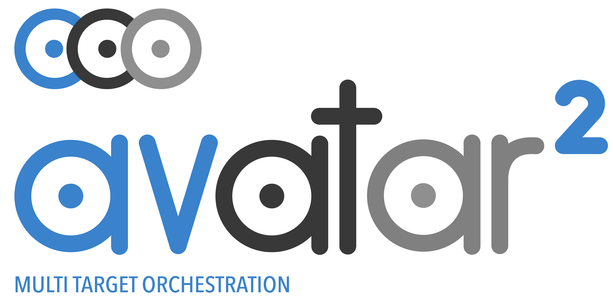

Avatar²
Avatar² is an open-source framework designed for reversing and analyzing embedded firmware. It focuses on facilitating the integration and interoperability between various binary analysis tools such as debuggers, emulators, disassemblers, symbolic execution engines, and fuzzers. It is the worthy successor of AVATAR, first of its name. The project lives on GitHub.
My PhD thesis topic was closely tied to the avatar² project where I have been a maintainer since 2019. My contributions include integrating new features such as the connection with the Inception debugger, managing issues and pull requests, writing unit tests and developing Continuous Integration (CI) pipelines. I have also led the annual release of our QEMU fork, which involves porting our commits to new QEMU versions and resolving resulting issues. Additionally, I have participated in promoting the project through presentations at various events (e.g., THCon, IMT Conference). More recently, our work was recognized as a finalist for ACSAC's Artifacts Competition and Impact Award in 2024. As highlighted, the project has 550 stars and more than 100 forks on GitHub, has been cited 192 times according to Google Scholar, and has been the the foundation for several influential extensions and research projects.
While initially designed to study monolithic firmware, I expanded avatar² capabilities to support Linux-based embedded systems through system call interception. Indeed, the Linux system call interface's recognized stability makes it a strong candidate for decoupling an application, enabling the separation of components targeted for study (often in an emulator) from its more hardware-dependent parts. This led to new challenges related to synchronizing the processes and their kernel states between the emulator and the device. This work was at the heart of my thesis Chestburster.